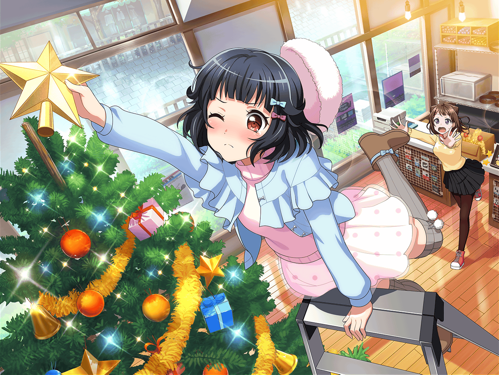

市ヶ谷家 蔵
香澄
ねぇねぇ！
クリスマスライブにやる曲だけど、
だんだんいい感じになってきたと思わない！？
有咲
確かにだいぶ形にはなってきたけど、
香澄は、ちょっと走り気味だろ？
香澄
そうかな？
私はあれくらいのテンポがいいと思うんだけど……？
りみりんはどう思う？
りみ
……う～～ん
香澄
……え？ りみりん？
やっぱり私、テンポ速すぎちゃった？
りみ
あ、ううん！ ごめんね。
今ちょっと別のこと考えちゃってて……
香澄
なになに、別のことって？
りみ
何ていうか、演奏はいい感じになってきたと思うんだけど、
私の作った曲自体に、なんとなくクリスマスらしさみたいなのが
抜けてる感じがするんだよね……
香澄
……クリスマスらしさ？
りみ
言葉ではうまく説明できないんだけど……
香澄
そっか……
クリスマスらしさ、か……
香澄
……そしたら、やっぱり有咲が、
サンタクロースの格好をするしかないね
有咲
はぁ！？
香澄
サンタが嫌だったら、トナカイでもいいよ！
有咲
ぜってーイヤだからっ！
この前も、散々その話しただろうが！
りみ
……あ、そうだ、香澄ちゃん！
その話をした時、香澄ちゃんの家って毎年、
クリスマスパーティやってるって言ってたよね？
りみ
それってどんな感じなの？
人の家のクリスマスの話とか聞けば、
クリスマスらしさのヒントがあるかもしれないから
香澄
……えぇ？
本当に普通だよ？
ケーキを食べて、あっちゃんとプレゼント交換をして……
香澄
……あっ！
やっば～～～いっ！
忘れてたっ！
りみ
ど、どうしたの！？
香澄
そう言えば、あっちゃんに渡すプレゼント、
全く用意してなかったっ！
香澄
どうしよっ！
プレゼント何がいいと思う！？
有咲
お前さ、今はそんな話してる場合じゃねーだろっ！？
りみが曲について真剣に悩んでるんだから！
りみ
ううん！ 私は大丈夫だよ！
香澄ちゃんの気持ちわかるもん！
私もお姉ちゃんにあげるプレゼント、すっごく悩んじゃったから
香澄
ありがとー、りみりん！
……有咲も一緒に考えてぇ～
有咲
私にはわかんねーって、そんなの
りみ
明日香ちゃんって、確か中３だよね？
それなら、ちょっとしたアクセサリーみたいなのは？
香澄
アクセサリーねぇ……
なんていうか……もうちょっとクリスマスっぽい物が
いいんだよね……？
りみ
そうだよね……
せっかくのクリスマスプレゼントだもんね
香澄
ねぇ、有咲はなんかない？
有咲
つーか、お前もちょっとは自分で考えろよ！
香澄
有咲ぁ～、助けてよぉ～
有咲
……ったく、しょうがねーなー。
そうしたら、あれなんてどうかな……？
ちょっと待ってろよ
香澄
え！？
有咲！ なんか持ってきてくれるの！？
有咲
確か、この辺にあったはずなんだけど……
……お、あった！ これこれ！
りみ
有咲ちゃん、それは？
有咲
これはスノードーム。
いかにもクリスマスって感じだろ？
ほら、見てみ？
香澄
わわっ！
こうやってひっくり返すと、雪が降ってくるんだ！
有咲！ これすっごくいいよ！ 私、これにする！
有咲
つーか、そんなに慌てるなって。
確か裏にネジがあって、これを巻くと……
香澄
へぇ！ オルゴールになってるんだ！
……しかも、クリスマスソングが流れてくるよ！
りみ
ホントだぁ～、とってもキレイな音色だね～。
オルゴールの澄んだ音が、クリスマスらしさを演出してて……
……え？ クリスマス……らしさ？
りみ
……あ！ それだよ！
それだよ、香澄ちゃん、有咲ちゃん！
香澄
ど、どうしたのりみりん！？
りみ
クリスマスライブでやる私達の曲に、このオルゴールみたいな
音を入れてみるっていうのはどうかな？
クリスマスらしさが出ると思うんだけど！
香澄
……いい！
それすっごくいいよ、りみりん！
有咲も、そう思うよねっ！？
有咲
まぁ、もしできたらすっげーいいと思うけど……
ん？ そう言えば……確か……
りみ
どうしたの有咲ちゃん？
また、蔵の中の荷物を探してるみたいだけど……？
有咲
……あった！ これこれ！
オルゴールの音とはちょっと違うけど、こんなのがあった
りみ
それって……ハンドベルっ！？
そんな物も、この蔵にはあるんだ！
……本当にすごいね
有咲
演奏中にこれを鳴らせば、
オルゴールっぽい音は出せると思うぞ
りみ
うん！ それ、すっごくいいと思う！
私、それでやってみたいな！
香澄
私もさんせー！
りみ
それじゃあ、ここのキーボードのパート、
明日までにハンドベルに直しておくねっ！
有咲
は、はぁ！？ 結局、私がやるのかよっ！